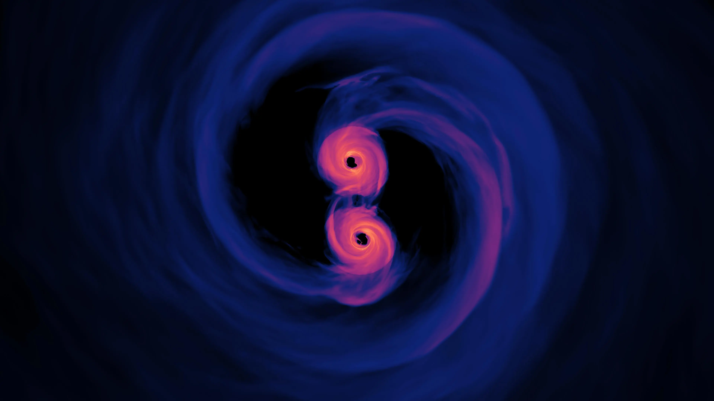
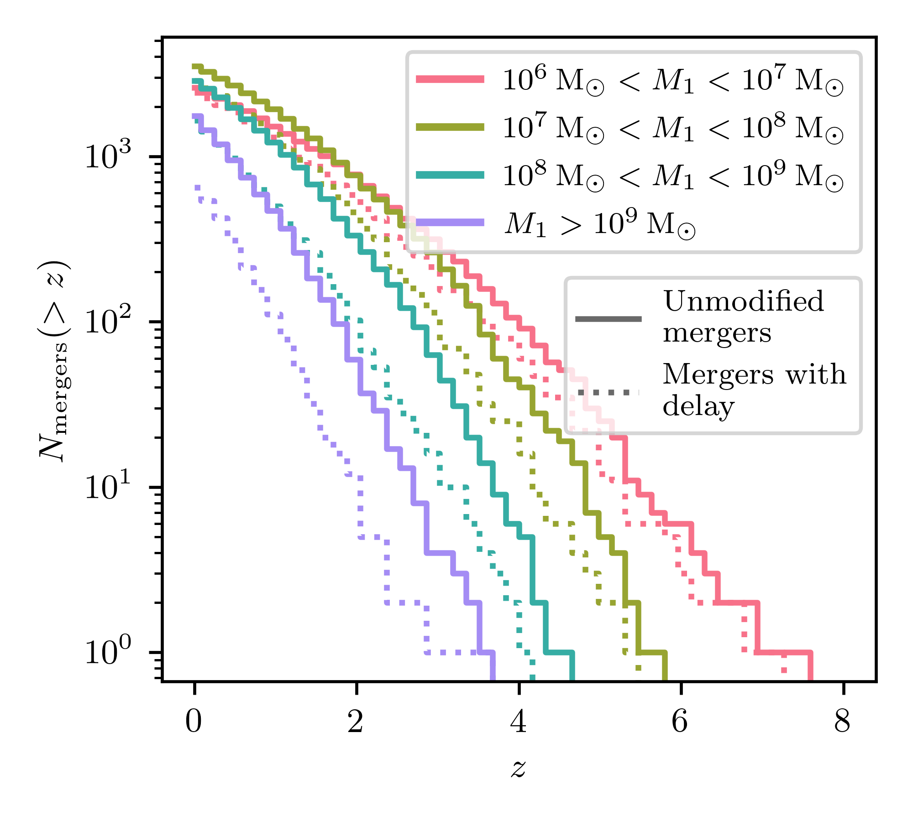

Outreach description
Premature supermassive black hole mergers in cosmological simulations of structure formation
Authors: Stephanie Buttigieg, Debora Sijacki, Christopher J. Moore and Martin A. Bourne
Supermassive black holes (SMBHs) are among the most massive objects in the Universe, having masses ranging from millions to tens of billions of times that of our Sun. The first evidence for a SMBH came from observations of stars orbiting the centre of our own galaxy. Since then, we have discovered that SMBHs reside at the heart of most, if not all, massive galaxies, and that their evolution is intricately related to that of their host galaxy.
Over cosmic time, galaxies merge with one another, with their central SMBHs tagging along. When this happens the black holes (BHs) are expected to orbit each other and form a binary system. For these BHs to eventually merge, they need to lose energy, which happens through interactions with stars, gas and dark matter in their host galaxy. If this process is efficient, the SMBHs will spiral closer together until they collide, unleashing a powerful burst of gravitational waves (GWs) that ripple across the Universe.
The European Space Agency has recently given the green light to the Laser Interferometer Space Antenna (LISA), a groundbreaking space mission designed to detect these cosmic ripples from merging SMBHs. Pulsar timing arrays (PTAs) have also detected evidence of a GW background, likely sourced by a population of merging SMBHs. To make the most of LISA's and PTAs' future discoveries, we need to refine our physical models of these mergers, ensuring we can accurately interpret the data once we get it.

Cosmological simulations
Some of the most powerful tools we have for studying these processes are cosmological simulations. These simulations model a representative volume of the Universe, tracking the evolution of gas, stars, dark matter, and BHs, as well as their interactions. Over the years, they have been remarkably successful in explaining many properties of the SMBH population. However, to remain computationally feasible, these simulations rely on simplifying assumptions; we don't have nearly enough computing power to model every single process occurring in the Universe with perfect accuracy.
One key limitation of cosmological simulations is their spatial resolution. While they can distinguish objects separated by large distances, there is a limit to how closely we can zoom in before individual objects blend together. This has important consequences for predicting when and how SMBHs merge. In simulations, BHs are often considered "merged" at relatively large separations, far greater than the actual scales at which real SMBHs undergo the final stages of coalescence. In reality, merging BHs must undergo additional physical processes before they truly become one. To address this, researchers have been working to improve sub-resolution models, which attempt to describe what happens at scales smaller than what the simulation can directly resolve.
Premature mergers
However, in our paper, using the FABLE simulation, we find that we need to be cautious even at scales above the resolution limit. Figure 2 shows the gas density in a small region of the simulation, with orange representing denser areas and blue indicating lower gas density. The white circle and cross mark the locations of two BHs involved in a BH merger event, while the same symbols in blue indicate the positions of their host galaxies. The six panels show how this system evolves over cosmic time, with the time since (or to) the BH merger in the simulation indicated in the bottom left.

In the first two snapshots, the two BHs sit at the centres of their respective host galaxies, as expected. But in the third snapshot (top right), we see that the two BHs have already merged, despite the fact that their host galaxies remain distinct. Since the simulation can still identify the galaxies as separate structures, they have not yet completed their own merger. In reality, the BHs should not merge until their host galaxies do, which only happens 1.3 billion years later in this specific case, as we can see in the bottom right panel. This means that our BH merger event should happen much later than predicted by the simulation.
When we account for these added delays, most merger events shift to later cosmic times, and some are pushed into the future, meaning that we wouldn't observe their GWs at all. Figure 3 illustrates how the total number of mergers evolves over time, measured by redshift \( z \). Here, \( z=0 \) represents the present day, while higher values of \( z \) take us further back in the Universe's history.
The solid lines in the figure show the total number of mergers occurring up to a given time directly from the simulation, while the dotted lines represent the same data but with our added delays. Different colours correspond to different BH masses, with pink indicating the lightest BHs and purple the heaviest. We see that mergers decrease across all mass ranges, but the effect is most dramatic for the heaviest BHs. This is because BHs take time to grow to their largest masses. Even in the original simulation, mergers involving the most massive BHs tend to occur later in cosmic history compared to lighter ones. Add further delays, and these heavy BH mergers are more likely to be pushed into the future, effectively removing them from our observable sample.

These delays have broader implications, which we discuss in detail in the paper. However, the main point that this work highlights is that although cosmological simulations are excellent tools for making predictions for observations, including for GWs, we need to understand their limitations and use them with caution.
Still confused? Contact me for more details!